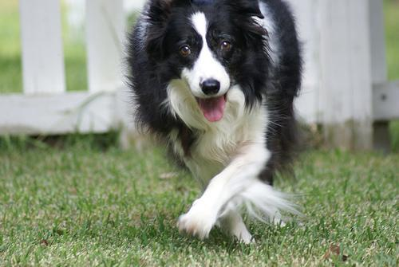
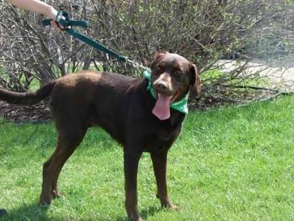
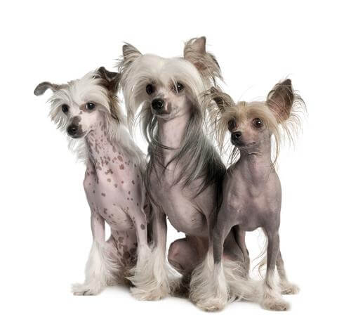
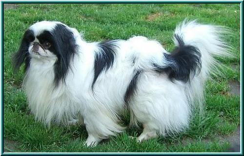
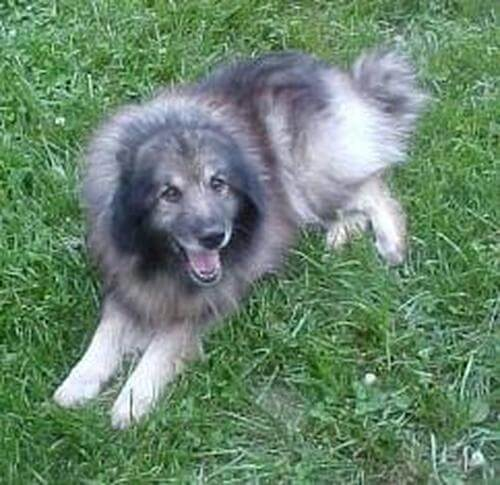
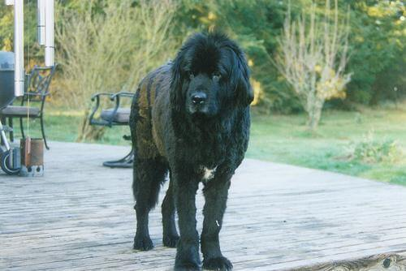

List of dog breeds used in dog classifier
Note: only the official AKC dog breeds, plus some additional common dog breeds (from the top 100 most popular dogs in 2018, and a couple mixes) were included. There are many other dog breeds (e.g., the Korean Jindo), that are recognized by the AKC as part of their Foundation Stock Service but are not eligible for AKC registration). So, this model was not trained on every existing dog breed, just the most common.
| Breed | Example |
|---|---|
| Affenpinscher | |
| Afghan Hound | |
| African Hunting Dog | |
| Airedale Terrier | |
| Akita | |
| American Staffordshire Terrier | |
| Anatolian Shepherd Dog | |
| Appenzeller | |
| Australian Cattle Dog | |
| Australian Shepherd | |
| Australian Terrier | |
| Basenji | |
| Basset Hound | |
| Beagle | |
| Bedlington Terrier | |
| Bernese Mountain Dog | |
| Bichon Frise |  |
| Black-And-Tan Coonhound | |
| Blenheim Spaniel | |
| Bloodhound | |
| Bluetick | |
| Border Collie |  |
| Border Terrier | |
| Borzoi | |
| Boston Terrier | |
| Bouvier Des Flandres | |
| Boxer | |
| Boykin Spaniel | |
| Brabancon Griffon | |
| Briard | |
| Brittany Spaniel | |
| Bull Mastiff |  |
| Bull Terrier | |
| Cairn Terrier | |
| Cane Corso | |
| Cardigan Welsh Corgi | |
| Carolina Dog | |
| Cavalier King Charles Spaniel | |
| Chesapeake Bay Retriever |  |
| Chihuahua | |
| Chinese Crested |  |
| Chinese Shar-Pei | |
| Chow Chow | |
| Clumber | |
| Cockapoo | |
| Cocker Spaniel | |
| Collie | |
| Coton de Tulear | |
| Curly-Coated Retriever | |
| Dachshund | |
| Dalmatian | |
| Dandie Dinmont | |
| Dhole | |
| Doberman | |
| Dogues de Bordeaux | |
| English Bulldog | |
| English Foxhound | |
| English Mastiff | |
| English Setter | |
| English Springer | |
| Entlebucher Mountain Dog | |
| Eskimo Dog | |
| Flat-Coated Retriever | |
| French Bulldog | |
| German Shepherd | |
| German Short-Haired Pointer | |
| German Wirehaired Pointer | |
| Giant Schnauzer | |
| Golden Retriever | |
| Goldendoodle |  |
| Gordon Setter | |
| Great Dane | |
| Great Pyrenees | |
| Greater Swiss Mountain Dog | |
| Groenendael | |
| Havanese | |
| Ibizan Hound | |
| Irish Setter | |
| Irish Terrier | |
| Irish Water Spaniel | |
| Irish Wolfhound | |
| Italian Greyhound | |
| Japanese Spaniel |  |
| Keeshond |  |
| Kelpie | |
| Kerry Blue Terrier | |
| Komondor | |
| Kuvasz | |
| Labradoodle | |
| Labrador Retriever | |
| Lagotto Romagnolo | |
| Lakeland Terrier | |
| Leonberg | |
| Lhasa | |
| Malamute | |
| Malinois | |
| Maltese Dog | |
| Mexican Hairless |  |
| Miniature American Shepherd | |
| Miniature Pinscher | |
| Miniature Poodle | |
| Miniature Schnauzer | |
| Newfoundland |  |
| Norfolk Terrier | |
| Norwegian Elkhound | |
| Norwich Terrier | |
| Nova Scotia Duck Tolling Retriever | |
| Old English Sheepdog | |
| Otterhound |  |
| Papillon | |
| Pekingese | |
| Pembroke Welsh Corgi | |
| Pomeranian | |
| Portuguese Water Dog | |
| Pug | |
| Rat Terrier | |
| Redbone | |
| Rhodesian Ridgeback | |
| Rottweiler | |
| Russell Terrier | |
| Saint Bernard | |
| Saluki | |
| Samoyed | |
| Schipperke | |
| Scottish Deerhound | |
| Scottish Terrier | |
| Sealyham Terrier | |
| Shetland Sheepdog | |
| Shiba Inu | |
| Shih-Tzu | |
| Siberian Husky | |
| Silky Terrier | |
| Soft-Coated Wheaten Terrier | |
| Staffordshire Bullterrier | |
| Standard Poodle | |
| Standard Schnauzer | |
| Sussex Spaniel | |
| Tibetan Mastiff | |
| Tibetan Terrier | |
| Toy Poodle | |
| Toy Terrier | |
| Vizsla | |
| Walker Hound |  |
| Weimaraner | |
| Welsh Springer Spaniel | |
| West Highland White Terrier | |
| Whippet | |
| Wire-Haired Fox Terrier | |
| Wirehaired Pointing Griffon | |
| Yorkshire Terrier |